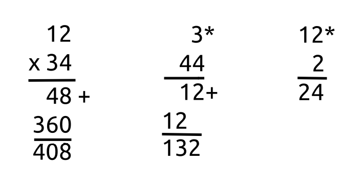

Multiplying
Too multiply one number with another, you put one above, and one beneath the other.
To the right of each new number except the final add a star/times sign (see image). You may also add an X to the left of all numbers, but the first.
Below all numbers of an operation, add a line. This is, again, the vertical "equal" sign, because what is one side is equal to what is on the other.
The Ancient Greeks had two kinds of time. One of them was "chronos", linear time. The other was "kairos", qualitative time. This idea refers to having several times more information. Say you have a radar that is picking things up at speed 1 cycle/minute. Three times that is three cycles per minute.
To multiply is to increase the amount of cycles, in essence. You can make something spin 1.5 times faster too, as we will see later.
For easy multiplying, you can multiply the first number to the second's ones column, the second's tens column, and so on, individually. Three 44 times is three four times, and three 40 times.
For any third number in the operation, you multiply the result of the first two with the third. If there is a fourth, you multiply the result of the first two and third with the fourth. And so on.
When multiplying, although not as necessary as when adding, for prettiness you can write large numbers such that the ones on each row are matched up on one column (vertical), the tens on another, the hundreds on yet another, etc.